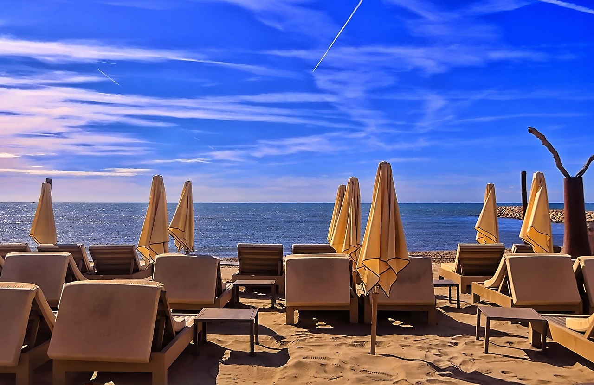
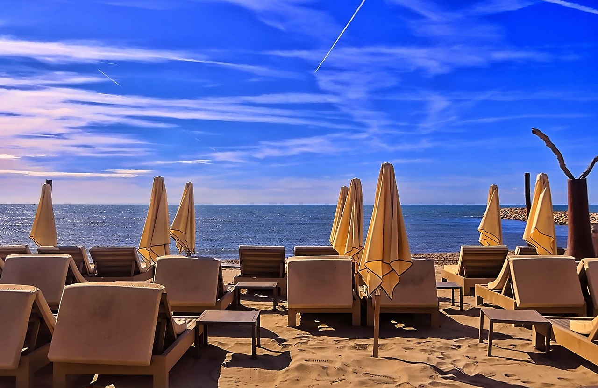
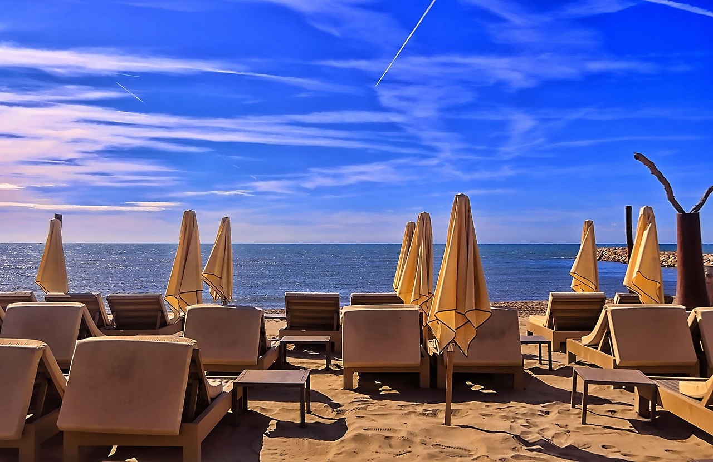

L’hotel, a gestione familiare da 3 generazioni e punto di riferimento per il turismo ragusano, con il passaggio di consegne ai figli dei fondatori ha subito una profonda ristrutturazione per essere in armonia con la natura e le tradizioni locali, riducendo l’impatto sull’ambiente e rendendolo una vera e propria ecostruttura.
Camere e servizi alberghieri

Le camere, per ridurre l’impatto ambientale, sono arredate utilizzando materiali di recupero sapientemente rielaborati da artigiani ed artisti locali. L’hotel propone un servizio colazione, mezza pensione o pensione completa (a scelta dell’ospite). Tutti i piatti serviti sono a Km 0 provenienti o dal nostro orto biologico o da produttori della zona. A disposizione dell’ospite anche una una spiaggia attrezzata, completamente accessibile e senza barriere architettoniche. Su richiesta e previa prenotazione si organizzano workshop sulla cultura siciliana, sulla permacultura delle coltivazioni, visite guidate della zona con una guida turistica locale o trekking con una guida escursionistica.
Mission e Vision
Mission
Creare un ecosistema di turismo responsabile, ridurre l'impatto sul pianeta, contribuire alla crescita e allo sviluppo sostenibile del territorio siciliano. Vision
Contribuire a rendere il turismo più sostenibile e in armonia con la natura.
Impegno per l'ambiente
Tutta la struttura è alimentata da energia rinnovabile, in parte autoprodotta da pannelli solari. Per diminuire l’impatto ambientale la biancheria è stata completamente sostituita con tessuti biologici come cotone certificato GOTS e canapa. Quella non più utilizzata è stata donata a una Onlus nella zona per distribuirla a famiglie in necessità. L’hotel inoltre è il primo in Sicilia a diventare Società Benefit, per generare un impatto positivo sulla società e sull’ambiente circostante.
 
